Primera propuesta
En mi primera propuesta decidí usar un gráfico de barra para representar la evolución o progreso de las notas de los egresados en proyecto de título del profesor Sergio Donoso, son un total de 7 egresados durante 2022 y 2024 resaltando datos como la nota máxima correspondiente a un 6,1 y la nota mínima que es un 4,5
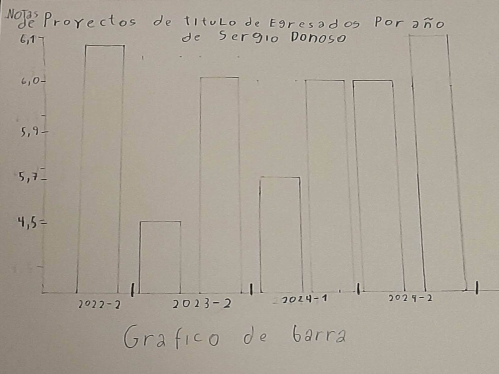
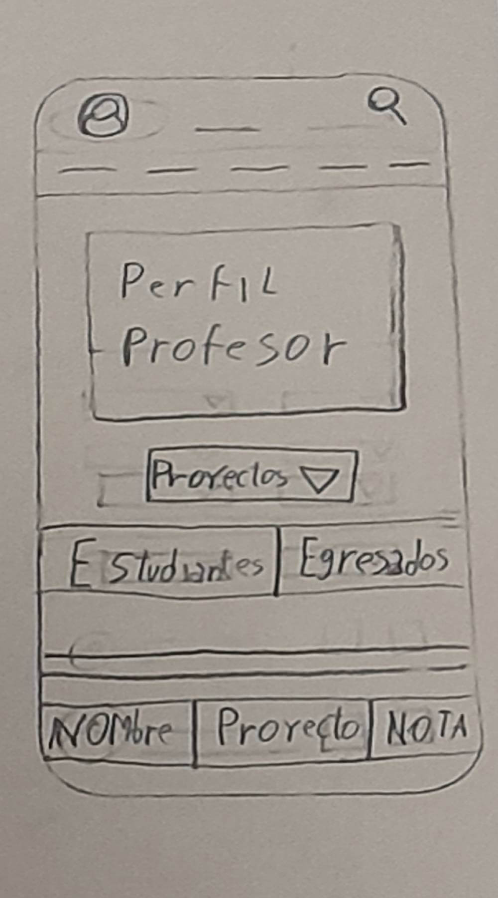
Segunda propuesta
Como segunda propuesta use un gráfico de tarta para representar el porcentaje de las notas de examen de título desde 2022 hasta 2025, decidí dividir el grafico en 3 rangos distintos que se muestran en la foto, para lograr una mejor comparativa de notas, después del conteo de datos cada total que había obtenido de los rangos lo multiplique por 100 para después dividirlo en el total de alumnos que serían 209, así obteniendo los porcentajes a mostrar abajo
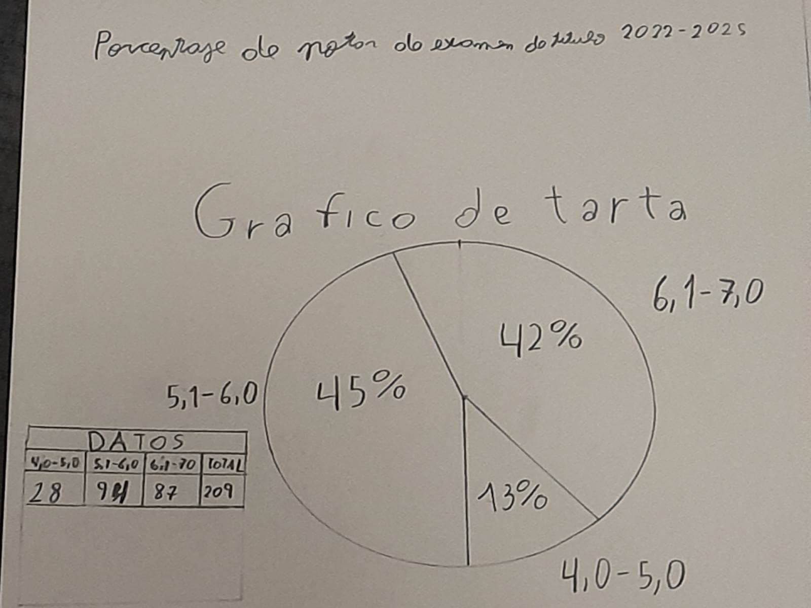
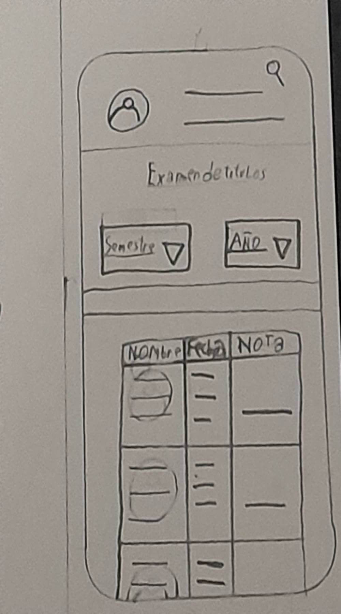
Tercera propuesta
En mi tercera propuesta decidir numerar a todos los profesores guía del primer semestre del presente año, a los cuales haría una revisión a su portafolio para saber si su área era grafica o industrial, abajo se muestra a través de una matriz de puntos con las cantidades de profesores que se dedican al área determinada y otros que no se especificaban, haciendo una división entre colores para tener una representación clara para cada categoría
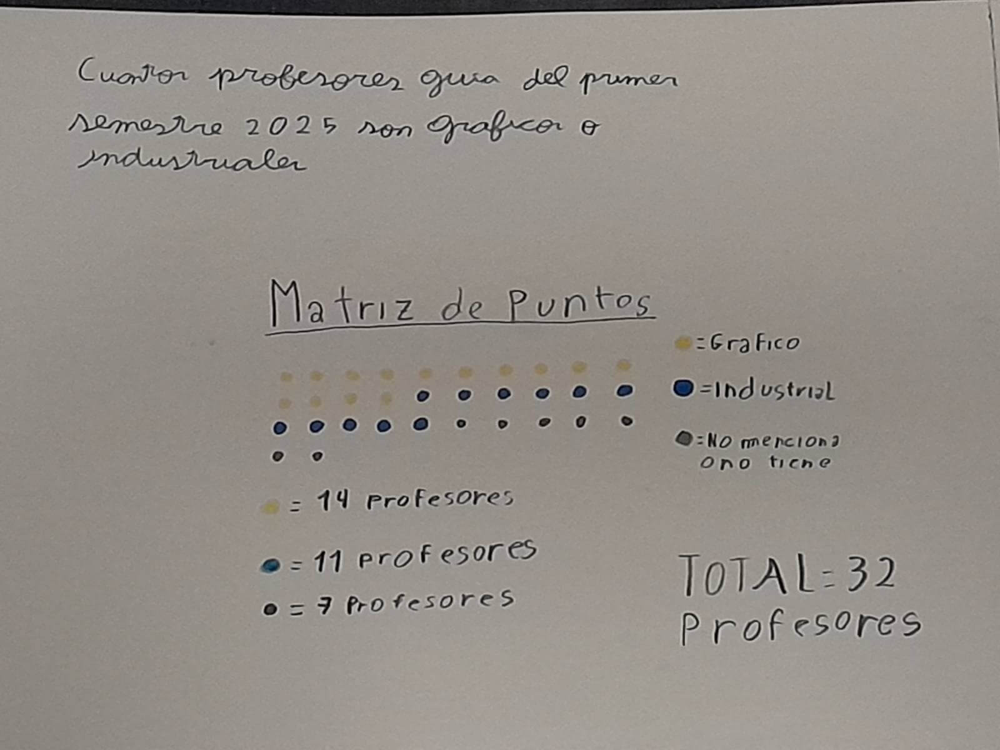
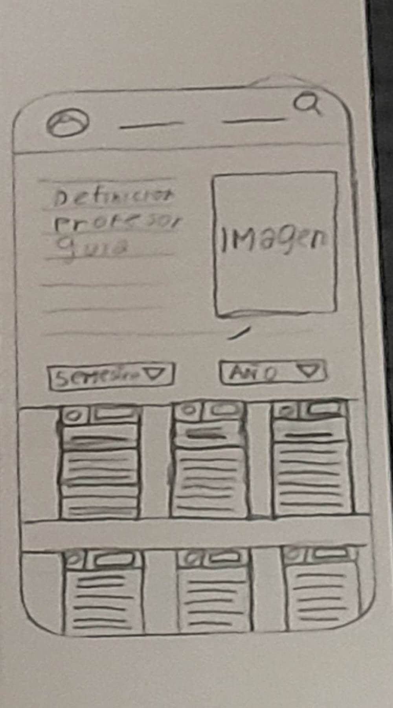
Cuarta propuesta
Como mi cuarta propuesta decidi usar un Diagrama de Venn para ver cuantos profesores pasaban o estaban bajo el 50% de aprobacion en examen de titulos a aquellos que habian rendido Proyecto de titulo II anteriolmente, los dividi en 3 categorias, la A que era sobre el 50%, la B bajo el 50%, y el medio para los que cumplian exactamente con el 50%, despues del conteo de 42 profesores se observa que mas profesores desaprueban que aprueban los examenes de titulos de estudiantes que dieron Proyecto II con anterioridad
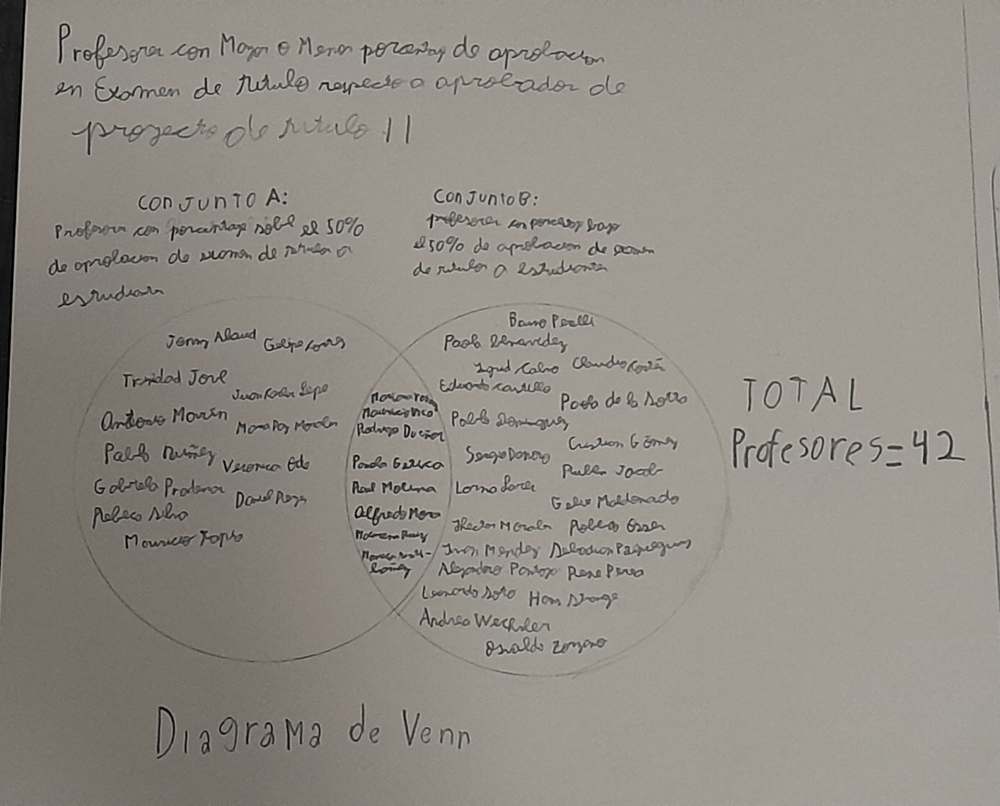
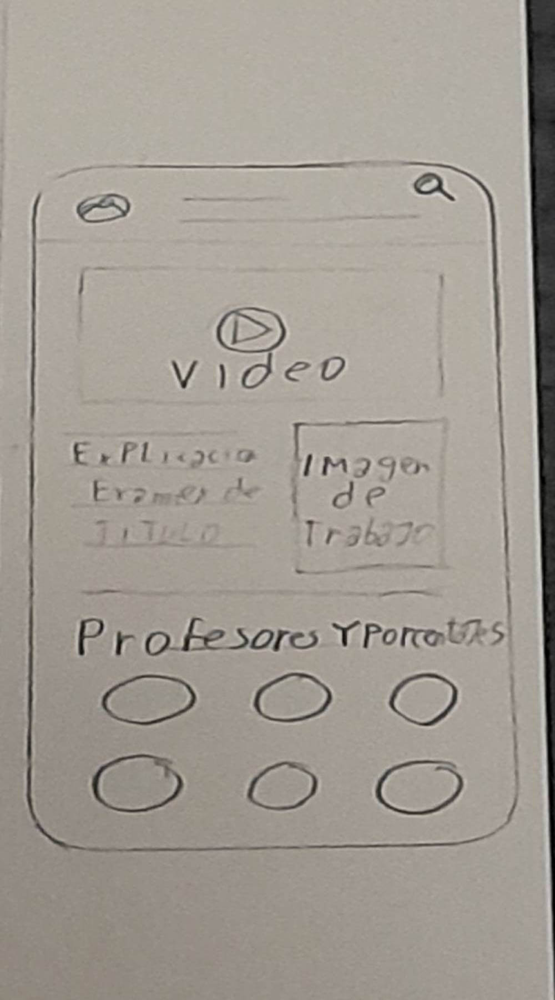
Quinta propuesta
Como quinta propuesta hice una numeración de todos los profes que tuve durante el año pasado, para saber la cantidad de créditos que ejercí durante todo el año. Use una tabla de datos para hacer las divisiones de las cuales agregue: nombre del profesor, ramo, créditos, y por cada casilla hacia abajo iba sumando los créditos constantemente, recalcando que en total rendi 11 asignaturas el año pasado donde Proyecto III ejercido por Bruno Rossi conto con la mayor cantidad de créditos siendo 9 en total
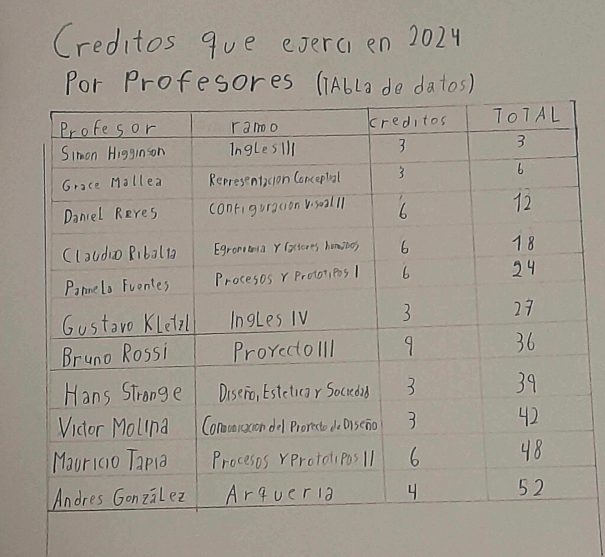
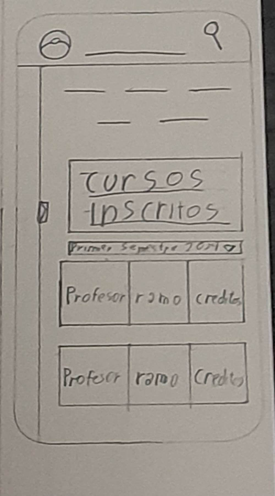
Sexta propuesta
En mi sexta propuesta use de referencia los portafolios de los profes de los cuales me di cuenta que cada profesor asigna palabras claves a sus planes de estudio siendo innovación, creación, e investigación, las cuales se dividían entre todos los profes, así que usando un gráfico de bala calcule la cantidad de profesores que usaban la determinada palabra en sus planes de estudio, lo que termino en una inclinación más favorable hacia los conceptos de creación y investigación con 29, y quedando más atrás innovación con 22 profes
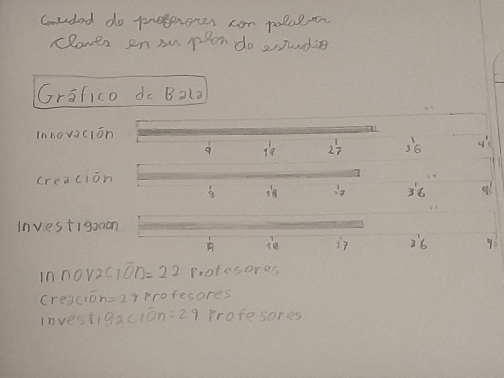
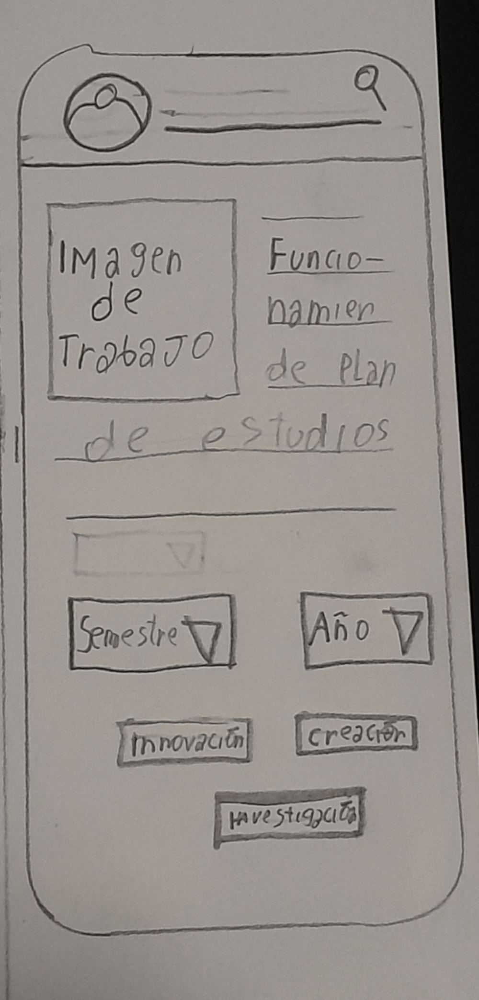